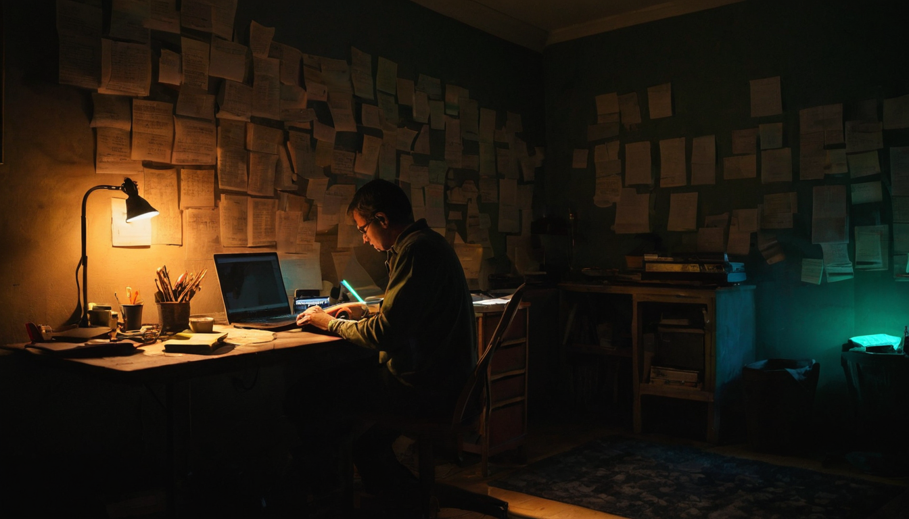
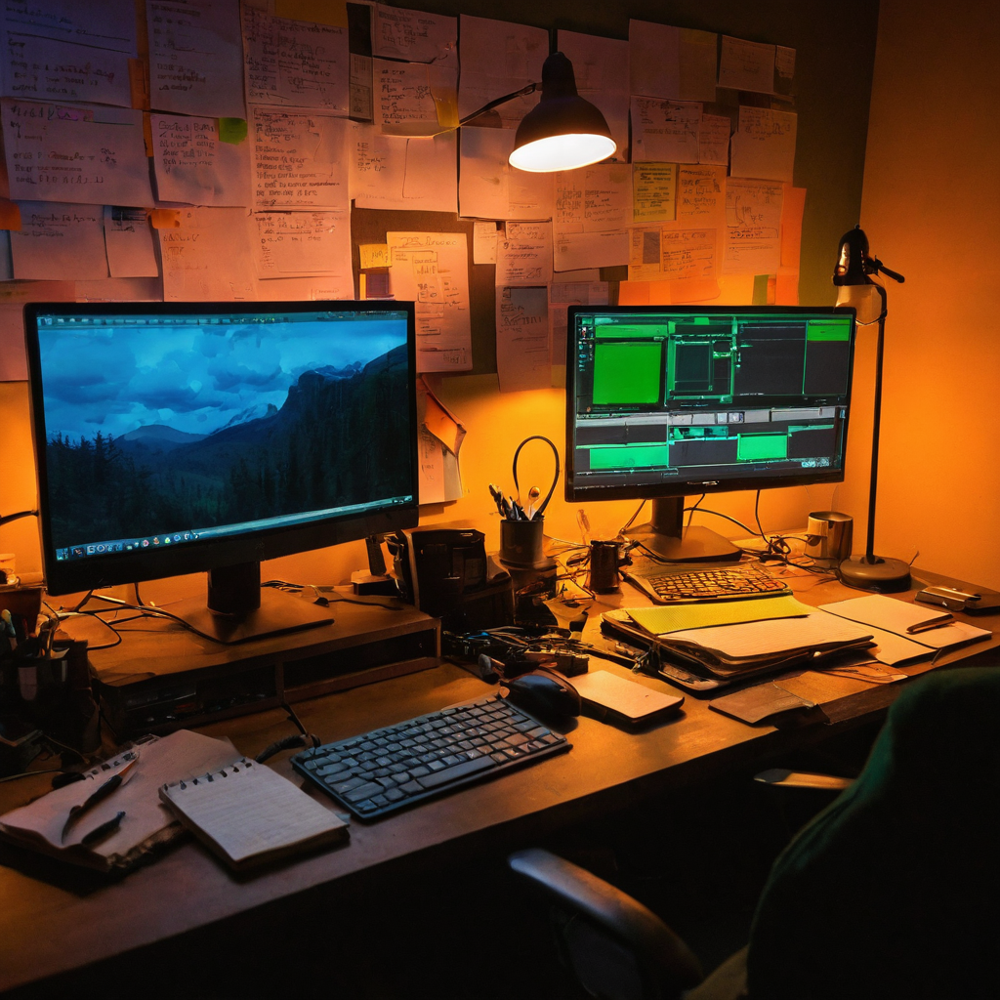

I posted a new update to FlipThisVideoMaker, a project I've been working on to make video generation more affordable and accessible for creators. The goal is to build a system that runs locally, leveraging GPU power to produce high-quality video without the need for expensive cloud services.
In the last 24 hours, I've been making progress across several key areas:
These updates are moving the project closer to a point where video generation can be done locally, without relying on expensive cloud infrastructure. For creators, this means more control, lower costs, and the ability to generate content on their own terms.
I'm excited about how far this has come in just a few iterations. The pieces are coming together in ways I wasn't sure would click this fast: better GPU utilization, more stable workflows, and lip sync that actually feels natural. The question I keep coming back to is how to make this work reliably for real people, not just in demos. Still not perfect, but it's getting there, and that's what I care about right now.
Now that we've got the basics working, the next steps are about refining the tool for real-world use. That means making the interface more intuitive, expanding support for more hardware, and making sure the system can handle longer and more complex video sequences without breaking down.
You can check out the latest updates on GitHub: FlipThisVideoMaker
What do you think is the most important feature to see in this kind of tool, and why?
